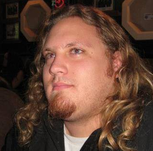

After over a decade working in IT, I was ready for a change. I had taken part in projects that introducted new technology all over the country. For years, I'd helped build systems to increase efficiency, make training easier, and keep the varous teams I was a part of informed and up-to-date on project status and what everyone else was working on.
But I was tired of always working on schedules that other people set for me. I wanted to be my own boss, control, my own hours, and stop stressing over projects and descisions that I had little say in, and was simploy expected to sign my life away to work on for other people. When I turned 40, I knew there had to be a better and more fulfilling purpose for my life.
I had always been interested in programming, and had dabbled in web development several times, completing programs through sites like freecodecamp.org and boot.dev. But the idea of making a career out of this never took off for me. However, I realized that it was time for me to commit, and this is where FullStack@40 was born.